Tsuyama
Tsuyama · Okayama
Tsuyama
Highlighted on the Okayama map.
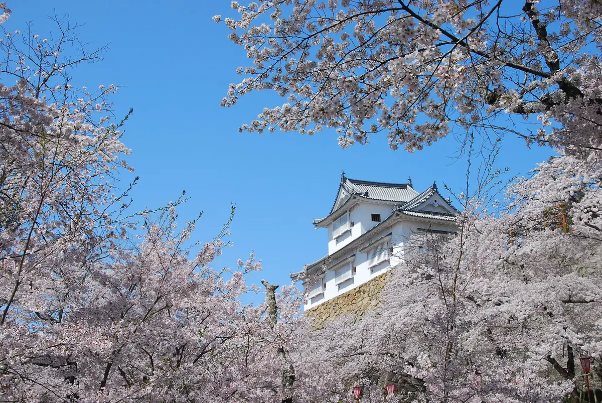
Stay
Tennen Onsen (Tabibito Baths) Hotel Rutoin Tsuyama Ekimae
Hotel Arufawan Tsuyama
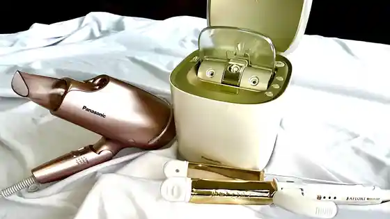
Za Shiroyamaterasu Tsuyama Bettei
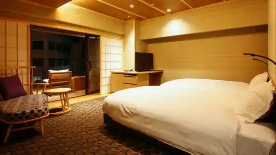
Tsuyama Tsuruyama Hotel
Tsuyama Sentoraru Hotel Taunhausu Tsuyama Shiro Mae (BBH Hotel Gurupu)
Tsuyama Sentoraru Hotel Anekkusu Tsuyama Shiro Mae (BBH Hotel Gurupu)
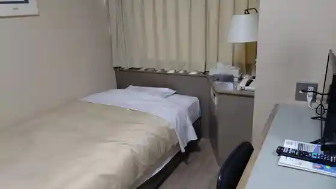
Hotel Serekutoin Tsuyama
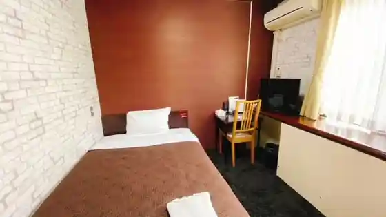
HOTEL AZ Okayama Tsuyama Mise
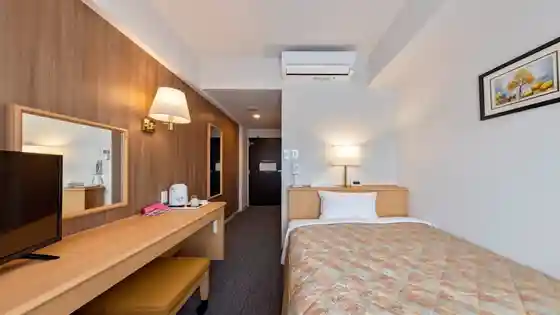
HOTEL R9 The Yard Tsuyama
Dining
Chie
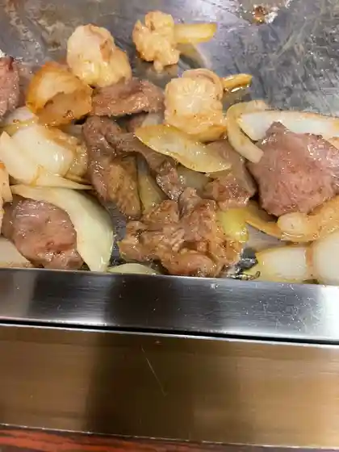
Irori Yaki Anami
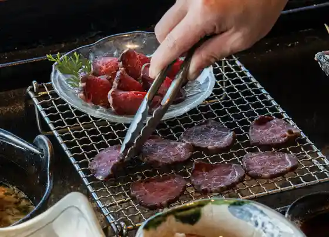
Men Ya Daisuke
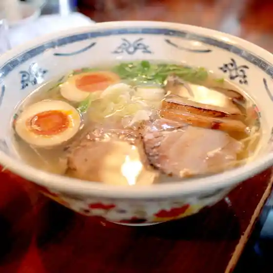
Tonpei
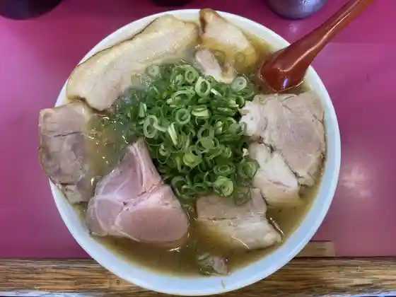
Hashino Shokudo
Hiroshima Kaze O Konomi Yaki Kuishin Bo
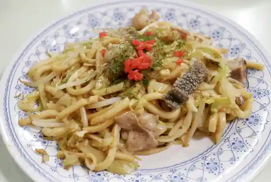
Tsutsuya
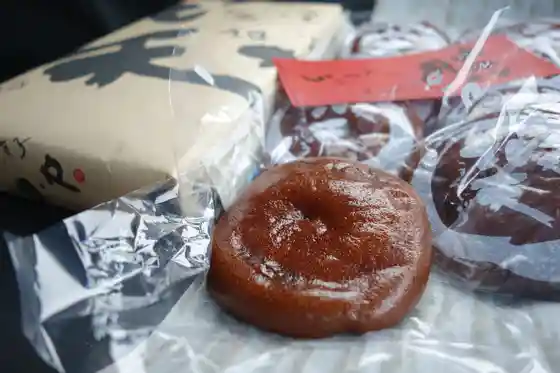
Itarianjierato LATTE
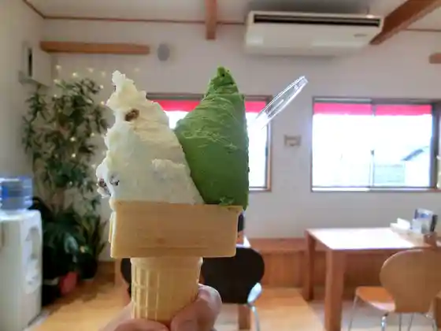
O Konomi Yaki Saegusa
Ippai Chaya Toho
Niku Hasami Ya
Ishikawa Ya
Tsuyama Joto Tofu Chaya Hayase Tofu Mise
Mugiwaraboshi
Risutorante Shiero
Sake Sakana Oden Sho Naya
Onsen
Tennen Onsen (Tabibito Baths) Hotel Rutoin Tsuyama Ekimae Public Bath
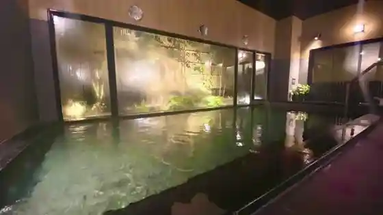
Za Shiroyamaterasu Tsuyama Bettei Public Bath
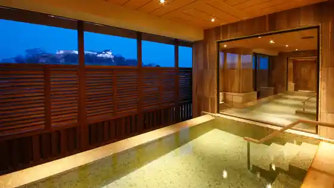
Sights
Tsuyama Shiro (Tsuruyama Park)
Shu Rakuen
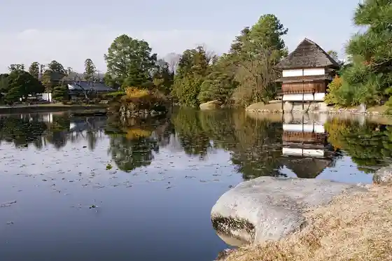
Tsuyama Yakusho
Tsuyama Manabi no Tetsudo Kan
Tsuruyama Park
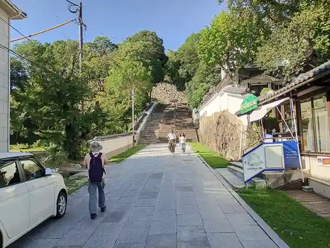